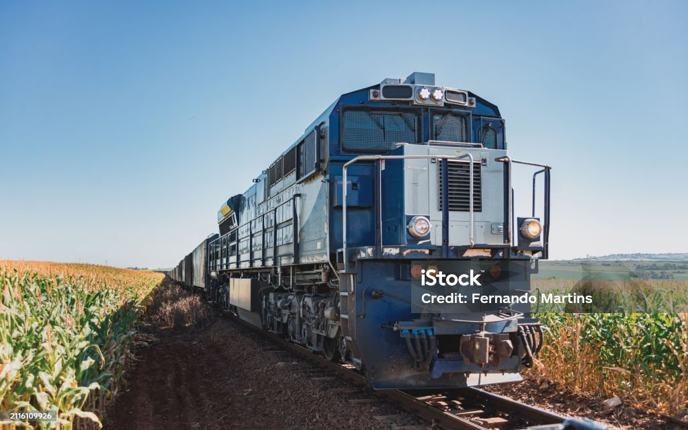

Nós nascemos e moramos em Juiz de Fora, o Gustavo em 2009 e João em 2010, o que resulta no Gustavo tendo 17 anos e João 16. Gustavo é um amante de trens e ama observar as máquinas passando sobre trilhos na cidade. Eu (João) gosto de ir à igreja. Tenho vontade de ser jornalista e Gustavo maquinista.
